面对大师如峰岭（【茗弈】授课内容之（一）实战对局分析）我之疑问
#1 面对大师如峰岭（【茗弈】授课内容之（一）实战对局分析）我之疑问 作者：兔子哥哥 发表时间：2009-7-1 15:45:57
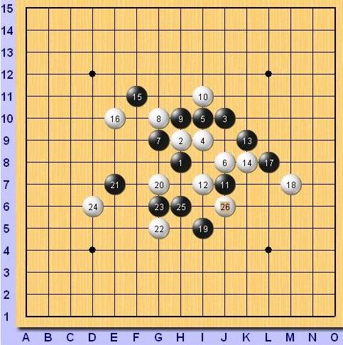
今天，看了一下【茗弈】妙手老师的实战对局分析，不禁对文中的一个局面产生了疑问，如图，
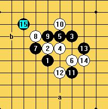，
到16为止，图中b点是实战走法，a点是按我的思路发现的必胜点，当时妙手老师解释实战16是右边不 存在必胜，所以才跟黑走的，可是小生今天拆了 一下，才发现右边16是白必胜的。
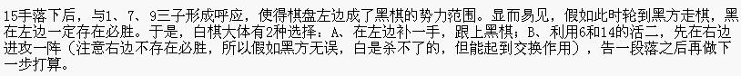。
下面是我拆的局面，请大家指教！谢谢！
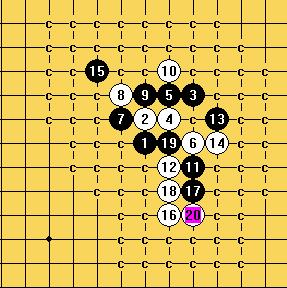
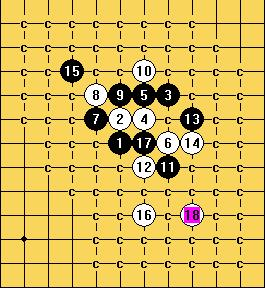
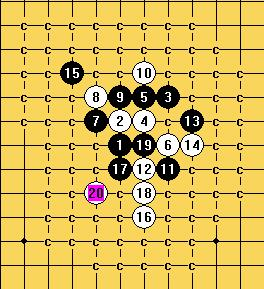
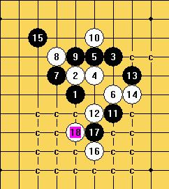
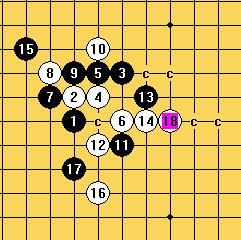
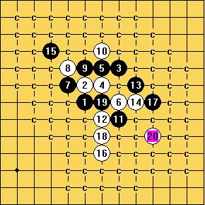
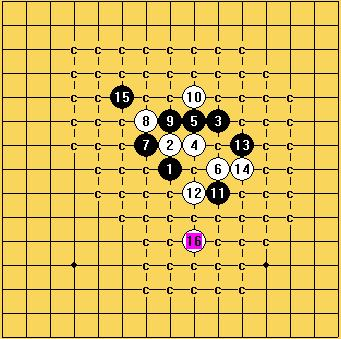
［ 茗弈小刀 于 2009-7-1 16:29:42 时奖励此帖[金币加 20 威望加1］
［ 撒蓉儿 于 2009-7-2 15:35:10 时花20金币送鲜花一朵］
［ 梦醉南天 于 2009-7-3 19:49:47 时花20金币送鲜花一朵］
#2 Re:面对大师如峰岭（【茗弈】授课内容之（一）实战对局分析）我之疑问 作者：不知 发表时间：2009-7-1 16:05:42
 第四张图少了一半...怎么没有横向滚动轴的..
第四张图少了一半...怎么没有横向滚动轴的..
#3 Re:面对大师如峰岭（【茗弈】授课内容之（一）实战对局分析）我之疑问 作者：茗弈小刀 发表时间：2009-7-1 16:20:22
很感谢兔子哥哥的分析。我想这就是实战难免遇到的问题，很多时候必胜的棋下败了，或者必败的局最后杀了。兔子哥哥有心了，这里我先代妙手谢谢。
这个15实战也常见到，如果这个16胜了，那么我们就可以否定这个15了。很重大的发明呀。不知兔子哥哥可否把16这个分支谱发上来大家学习下？先谢谢了！
#4 Re:面对大师如峰岭（【茗弈】授课内容之（一）实战对局分析）我之疑问 作者：极地剑客 发表时间：2009-7-1 16:52:16
兔子无敌~~~~~~~~~~~~~~~~#5 Re:面对大师如峰岭（【茗弈】授课内容之（一）实战对局分析）我之疑问 作者：自来水 发表时间：2009-7-1 17:18:56
实战,毕竟是实战哪...什么事都有可能发生.#6 Re:面对大师如峰岭（【茗弈】授课内容之（一）实战对局分析）我之疑问 作者：茗弈雨 发表时间：2009-7-1 19:35:19
楼主棋谱发上来我们验证下吧！ 还有几个点我杀不出呢。
还有几个点我杀不出呢。
#7 Re:面对大师如峰岭（【茗弈】授课内容之（一）实战对局分析）我之疑问 作者：兔子哥哥 发表时间：2009-7-2 15:27:50
等下过几天了就把棋谱发上来，昨天中午只是下班了随便搞了一下，以为这个棋大家都能走出来了，就没保存棋谱呵呵，不过主要的已经发出来了，大家有哪个点搞不出来就发图嘛，毕竟我用的是终结者2006的破解版本，不知道是否有误！谢谢#8 Re:面对大师如峰岭（【茗弈】授课内容之（一）实战对局分析）我之疑问 作者：游戏人间 发表时间：2009-7-2 15:42:59
=======上图对应的爱五子棋谱代码如下，以便你拆解：========
h8h9j10i9i10j8g9g10h10i11j7i7k9k8l8m7m9
======================================================
黑最强走法，黑优势。
前面那个图的问题是黑在右边少了一些交换。交换完白在右边无杀。
［ 茗弈小刀 于 2009-7-2 19:40:44 时奖励此帖[金币加 20 威望加1］
#9 Re:面对大师如峰岭（【茗弈】授课内容之（一）实战对局分析）我之疑问 作者：安娜制作所 发表时间：2009-7-2 16:32:25
感谢大鱼老师的指点!谢谢!
#10 Re:面对大师如峰岭（【茗弈】授课内容之（一）实战对局分析）我之疑问 作者：茗弈小刀 发表时间：2009-7-2 19:47:11
=======上图对应的爱五子棋谱代码如下，以便你拆解：========
h8h9j10i9i10j8g9g10h10i11j7i7k9k8l8m7i5
======================================================
我比较喜欢这个17，也推荐给大家。
#11 Re:面对大师如峰岭（【茗弈】授课内容之（一）实战对局分析）我之疑问 作者：lfzxdh 发表时间：2009-7-2 20:13:35
中午下班还能上网。。。羡慕哟
#12 Re:面对大师如峰岭（【茗弈】授课内容之（一）实战对局分析）我之疑问 作者：修远求索 发表时间：2009-7-3 20:40:35
学习中#13 Re:面对大师如峰岭（【茗弈】授课内容之（一）实战对局分析）我之疑问 作者：撒蓉儿 发表时间：2009-7-5 18:35:58
=======上图对应的爱五子棋谱代码如下，以便你拆解：========
h8h9j10i9i10j8g9g10h10i11j7i7k9k8f11i5m8
======================================================
请教兔子哥哥这个17如何杀？
#14 Re:面对大师如峰岭（【茗弈】授课内容之（一）实战对局分析）我之疑问 作者：火光冲天 发表时间：2009-7-5 19:39:00
=======上图对应的爱五子棋谱代码如下，以便你拆解：========
h8h9j10i9i10j8g9g10h10i11j7i7k9k8f11i5m9
======================================================
还有这个呢？
#15 Re:Re:面对大师如峰岭（【茗弈】授课内容之（一）实战对局分析）我之疑问 作者：兔子哥哥 发表时间：2009-7-6 15:17:22
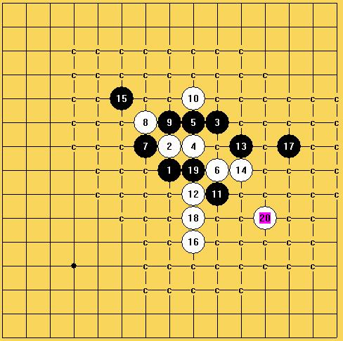[dl
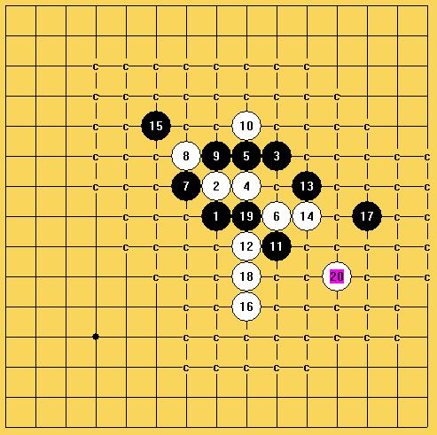黑有攻势，但完全无用！
［ 火光冲天 于 2009-7-6 17:39:47 时花20金币送鲜花一朵］
#16 Re:面对大师如峰岭（【茗弈】授课内容之（一）实战对局分析）我之疑问 作者：火光冲天 发表时间：2009-7-6 21:33:20
=======上图对应的爱五子棋谱代码如下，以便你拆解：========
h8h9j10i9i10j8g9g10h10i11j7i7k9k8f11i5m8i6i8l6k10l10l9j11k6
======================================================
这个怎么杀？前面到24没问题吧，后面交换怎么那么多？
#17 Re:面对大师如峰岭（【茗弈】授课内容之（一）实战对局分析）我之疑问 作者：方圆之外 发表时间：2009-7-7 10:30:50
24防下面N7..上面黑没杀..下面白必胜.#18 Re:面对大师如峰岭（【茗弈】授课内容之（一）实战对局分析）我之疑问 作者：茗弈宽容 发表时间：2009-7-7 10:34:43
=======上图对应的爱五子棋谱代码如下，以便你拆解：========
h8h9j10i9i10j8g9g10h10i11j7i7k9k8f11i5m8i6i8l6k10l10l9n7h7
======================================================
这样怎么杀呢？
#19 Re:面对大师如峰岭（【茗弈】授课内容之（一）实战对局分析）我之疑问 作者：茗弈宽容 发表时间：2009-7-7 10:37:44
直接在中间黑没有了，看到了。
#20 Re:面对大师如峰岭（【茗弈】授课内容之（一）实战对局分析）我之疑问 作者：茗弈宽容 发表时间：2009-7-7 10:44:04
=======上图对应的爱五子棋谱代码如下，以便你拆解：========
h8h9j10i9i10j8g9g10h10i11j7i7k9k8f11i5m8i6i8l6k10l10l9n7j9l11k6
======================================================
这样呢？
#21 Re:面对大师如峰岭（【茗弈】授课内容之（一）实战对局分析）我之疑问 作者：方圆之外 发表时间：2009-7-7 10:55:52
=======上图对应的爱五子棋谱代码如下，以便你拆解：========
h8h9j10i9i10j8g9g10h10i11j7i7k9k8f11i5m8i6i8l6k10l10l9n7j9l11k6m9
======================================================
29可能还会挣扎下.不过基本无济于事.如果黑交换掉4.6.20.24.这几个子力.白可以在G6或H6做杀.
［ 慎独 于 2009-7-7 11:01:54 时花20金币送鲜花一朵］
［ 火光冲天 于 2009-7-7 12:32:19 时花20金币送鲜花一朵］
#22 Re:面对大师如峰岭（【茗弈】授课内容之（一）实战对局分析）我之疑问 作者：兔子哥哥 发表时间：2009-7-7 14:40:13
谢谢方圆之外解答！